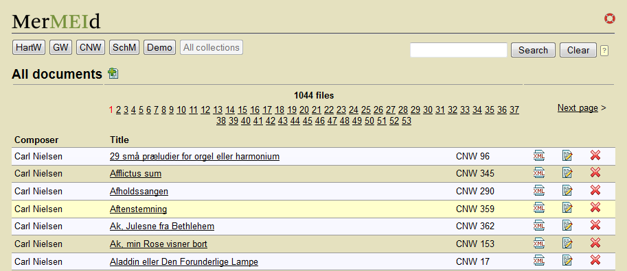
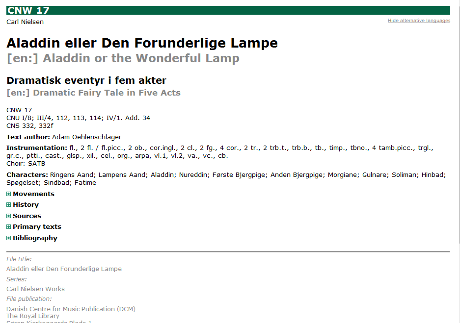

MerMEId basics
MerMEId (Metadata Editor and Repository for MEI data) is a tool for editing, (pre-)viewing and handling of music metadata based on MEI.
It consists of three main components: the MEI file browser, the metadata editing tool, and the HTML preview.
File list
The usual way to start working with MerMEId would be to open the file list, usually located at http://[your hostname here]/storage/list_files.xq. You should then see a list of existing files in your collection (if any):

Creating a new file: To create a new file, click the add
button  located in the upper right corner.
This will open a new file in the metadata editor.
located in the upper right corner.
This will open a new file in the metadata editor.
Listing existing files: Near the top of the files list page, a number of controls allow you to you choose which files to list. Use the first select box if you want to see only unpublished, modified or published files. The second select box lets you filter files by collection, provided you have specified file collection information in your files. You may also narrow the results using the keywords search.
Navigate through the result pages using the page numbers or the 'Previous page' / 'Next page' links.
From the list, you have the following options:
- HTML preview: Click the title of any file to see its metadata displayed as formatted HTML.
- XML source: Click the XML view
icon
 to see the file's plain XML
data
to see the file's plain XML
data - Edit file: Click the edit icon
 to open the file in the
metadata editor
to open the file in the
metadata editor - Publish file(s): The color of the checkboxes indicates whether the file is
published and up to date, has been
modified since last publication, or is
unpublished.
To publish or unpublish files, check the appropriate checkboxes and select the desired action from the publish menu activated by moving the cursor over the publish menu button .
.
Publishing in this context simply means that MerMEId copies the file to a separate folder named 'public' in your eXist database. How files placed in the public folder are further processed or made available to others is outside the scope of MerMEId and entirely depends on what your system is set up to do with them.
Unpublishing means that MerMEId deletes the copy of the file from the public folder. - Delete file: Clicking the
delete icon will display a warning that
you are about to delete the selected file. Click 'OK' to delete, otherwise 'Cancel'.
Please note that only unpublished files can be deleted. To delete a previously published file you will need to unpublish it first to make sure it is deleted from the public folder as well.
The editor – general functionality and navigation
The editor (i.e. the forms for editing your data) is divided into a number of separate forms. You navigate through the main parts of it by clicking the tabs at the top of the page:

- Make sure to save any changes you have made before switching tabs. A warning occurs if you are about to change tab without having saved changes.
Some general functions are found in the upper right corner of the form:
| Save file | |
| HTML preview | |
|
XML source view |
| Close the editor end return to file list | |
| Settings | |
| Open this manual |
Next to repeatable fields you will find a number of icons for adding, deleting and re-arranging items:
| Move up (change order of items) | |
| Move down | |
| Duplicate item (adds a copy of the current item) | |
| Add new item below the current one | |
| Delete | |
| Shift this item to the right, making it a sub-component (child) of the item above (applies to music components only) | |
| Shift this item to the left, i.e. up one level (applies to music components only) | |
|
|
Edit this item (opens a details editor) |

|
Go to a linked resource (implies closing the current file and opening a different one for editing) |

|
Add reference to an authority file (applies to personal names) |
Hints: Next to many input fields you will find a question mark ?Hint or explanation. Hovering over the question mark displays a hint, an explanation or other useful information.
HTML Preview
The purpose of the HTML preview is to give you an overview of the (meta-)data you have entered. Your project may or may not use it as a basis for public display of your data as well, but probably this is not how your data will be displayed in the end.

If titles or other texts are given in more than one language, all other alternatives than the first one are shown in grey. To hide these alternative language texts, click the "Hide alternative languages" link in the upper right corner.
By default, only the headings of the main sections are shown. To view the contents, click the the expand icon or the heading. To hide the contents, click the heading again. The number of headings shown depends on which sections have any content.
At the bottom of the page, in grey, metadata about the file are displayed (i.e. the colophon).